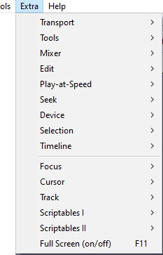

Extra Menu
- The Extra menu will be of most interest to visually-impaired users or those who have difficulty using the mouse.
- Shortcuts can be assigned to these commands if required.
- This menu can be turned on (or off) at or the Interface pane of Preferences.
- 
- The first group of items on this menu mostly provide menu equivalents of toolbar actions. Most things that can be achieved using the toolbars can be achieved using these menu items.
- The second group of items on this menu includes 'scriptables', that is commands which are usually used from scripts or macros
Transport SubMenu
Extended commands related to play and record. Find out more about the 'Transport' submenu here.
Tools SubMenu
Extended commands to select the tool, for example Time Shift Tool, Envelope Tool or Multi Tool. Find out more about the 'Tools' submenu here.
Edit SubMenu
Extended commands related to editing. Find out more about the 'Edit' submenu here.
Device SubMenu
Extended commands related to selecting a device. Find out more about the 'Device' submenu here.
Mixer SubMenu
Extended commands related to volume. Find out more about the 'Mixer' submenu here.
Play-at-Speed SubMenu
Extended commands related to play at speed. Find out more about the 'Play-at-Speed' submenu here.
Seek SubMenu
Extended commands providing menu equivalents for the short and long seek commands which skip the playback cursor backwards (left) or forwards (right) by a short or long period of time.. Find out more about the 'Seek' submenu here.
Selection SubMenu
Extended commands related to selecting. Find out more about the 'Selection' submenu here.
Timeline SubMenu
Enables you to change the Timeline display mode between Minutes and Seconds (default setting) and Beats and Measures.
Focus SubMenu
Extra commands to set focus, usually focus on one track. Find out more about the 'Focus' submenu here.
Cursor SubMenu
Extra commands to move the cursor. Find out more about the 'Cursor' submenu here.
Track SubMenu
Extra commands to operate on a track that has focus. Find out more about the 'Track' submenu here.
Scriptales I SubMenu
Extra commands that are particularly useful in Macros. Find out more about the 'Scriptables I' submenu here.Scriptales II SubMenu
Extra commands that are particularly useful in Macros. Find out more about the 'Scriptables II' submenu here.Full Screen (on/off) F11 (on Mac ⌘ + /)
Toggle full screen mode with no title bar.
Minimize All Projects Option + ⌘ + M - Mac only
On Mac only there is an extra command in this menu "Minimize All Projects", shortcut Option + ⌘ + M, which minimizes all Audacity projects that you have open.